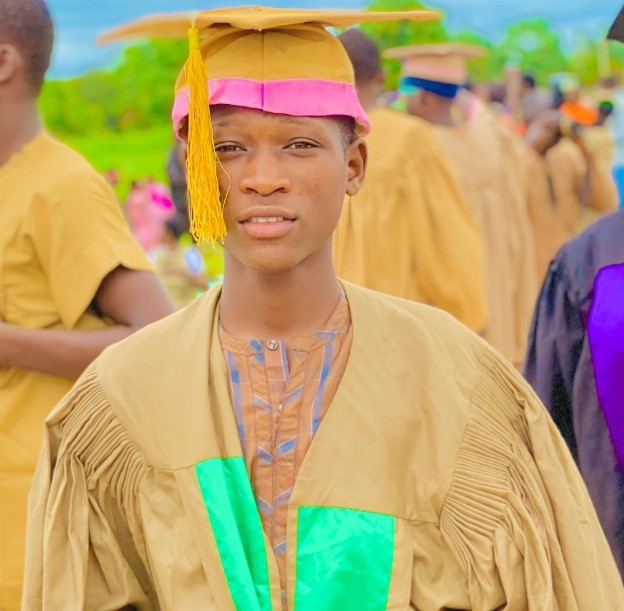

Tsalha Rabiu Abubakar | WDD 130
Hello! My Name Is Tsalha Rabiu Abubakar, From Federal University Of Lafia,Nasarawa State.
An IT Student, In ICT Department,College Of Education Akwanga, Nasarawa State.
learning WDD :Technology & Computing Web Design and Development: Refers to the process of creating and maintaining websites, encompassing both the design (layout, user interface) and development (coding, functionality) aspects. and Windows Disk Defragmenter: A Microsoft utility designed to optimize the performance of hard drives by reorganizing fragmented data. Weighted Delta Debugging (WDD): An advanced debugging technique that prioritizes larger input fragments when identifying the cause of software bugs, enhancing the efficiency of the debugging process.